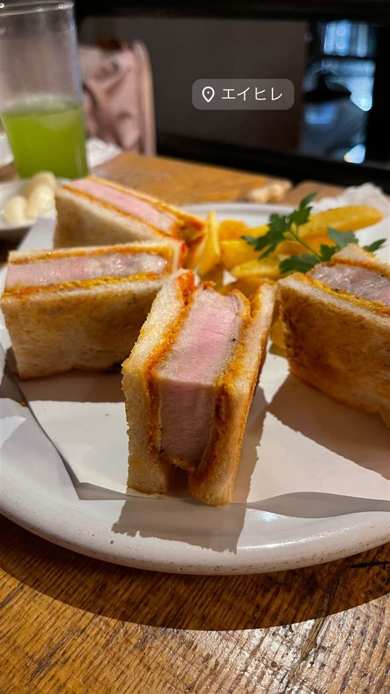
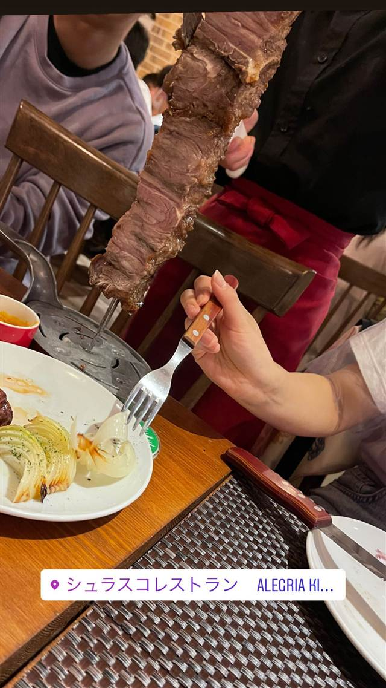

BY TOWN
吉祥寺（東京・多摩）4店
-
 カフェ 吉祥寺
カフェ ルミエール（Cafe Lumiere）
目の前でメレンゲを燃やして仕上げる焼き氷はここだけの独自スタイル
昼 ¥1,000～¥1,999 夜 ¥3,000～¥3,999
カフェ 吉祥寺
カフェ ルミエール（Cafe Lumiere）
目の前でメレンゲを燃やして仕上げる焼き氷はここだけの独自スタイル
昼 ¥1,000～¥1,999 夜 ¥3,000～¥3,999
-
 インド・ネパール 吉祥寺駅
Sajilo Cafe（サジロカフェ）
36種のスパイスを効かせた化学調味料無添加のネパールカレー
昼 ¥1,000～¥1,999 夜 ¥1,000～¥1,999
インド・ネパール 吉祥寺駅
Sajilo Cafe（サジロカフェ）
36種のスパイスを効かせた化学調味料無添加のネパールカレー
昼 ¥1,000～¥1,999 夜 ¥1,000～¥1,999
-

サンドイッチ 吉祥寺駅 エイヒレ（吉祥寺ハモニカ横丁） ハモニカ横丁の立ち飲みで、店名由来の炙りエイヒレを味わう 夜 ¥2,000～¥2,999 -

シュラスコ 吉祥寺 シュラスコレストラン ALEGRIA kichijoji 43歳で異業種から独立、ブラジル直輸入の機材で焼くシュラスコ20種